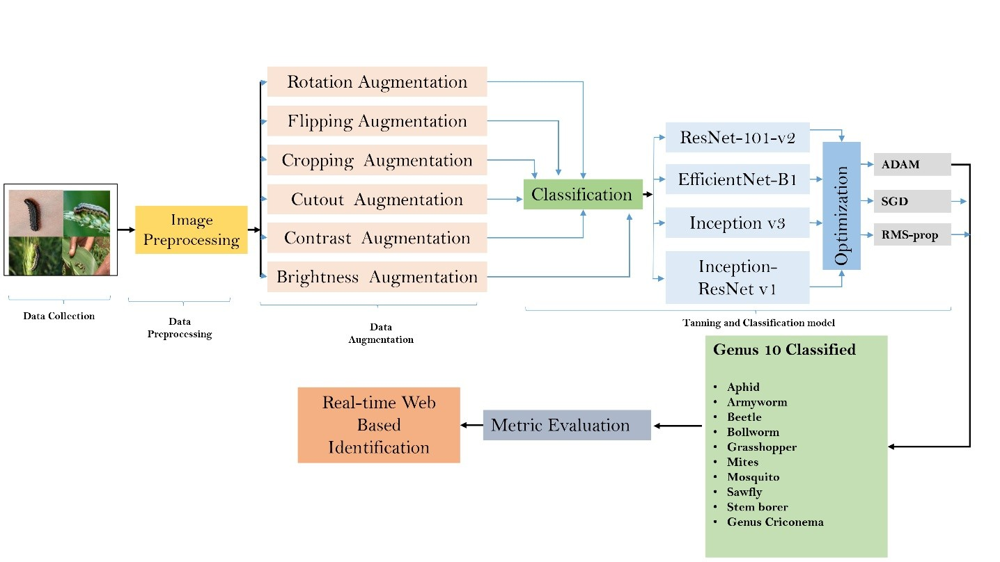
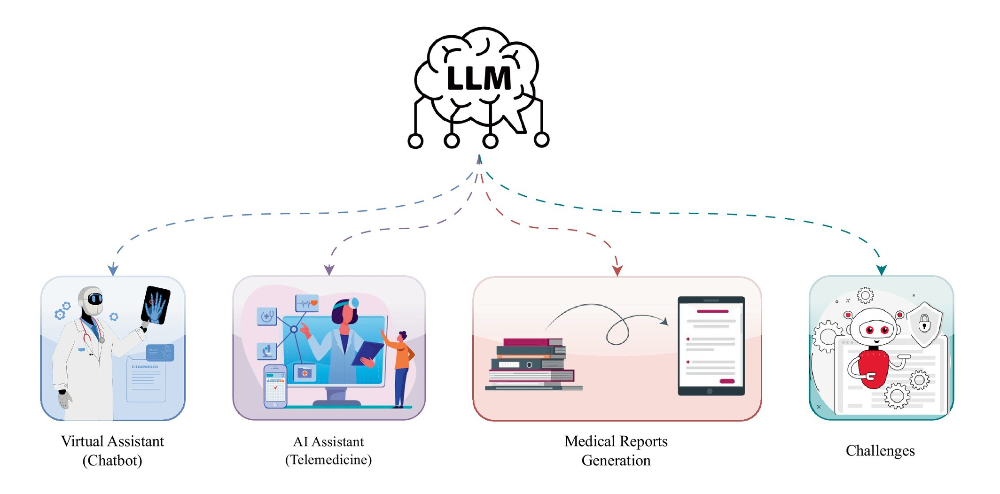
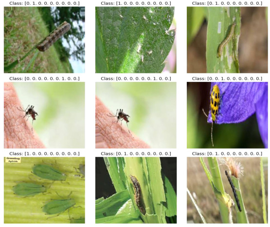
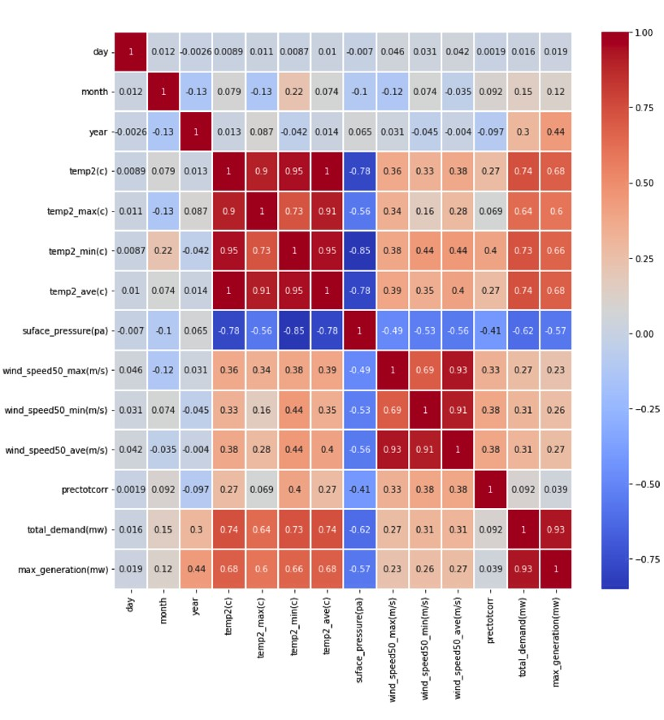

Nazmul Huda Badhon, Imrus Salehin, Md Tomal Ahmed Sajib, Md Sakibul Hassan Rifat, SM Noman, Nazmun Nessa Moon, "TLCNN: Tabular data-based Lightweight Convolutional Neural Network for Electricity Energy Demand Prediction." on Global Energy Interconnection, 14 November 2025, ISSN: 2590-0358, Elsevier.

Md Tomal Ahmed Sajib, Nazmul Huda Badhon, Imrus Salehin, Md Sakibul Hassan Rifat, Faysal Ahmed, Nazmun Nessa Moon, "A comparative deep learning methodology for plant insect image classification: assessment of CNN architectures and augmentation techniques" on MethodsX, 17 October 2025. ISSN: 2215-0161, Elsevier.

Imrus Salehin, Md Tomal Ahmed Sajib, Nazmul Huda Badhon, Md Sakibul Hassan Rifat, Nazrul Amin, Nazmun Nessa Moon, "Systematic Literature Review of LLM–Large Language Models in Medical: Digital Health, Technology and Applications." Engineering Reports, 7(9): e70365, 12 September 2025. ISSN: 2577-8196, Wiley.

Imrus Salehin, Mahbubur Rahman Khan, Ummya Habiba, Nazmul Huda Badhon, Nazmun Nessa Moon (2024), "BAU-Insectv2: An Agricultural Plant Insect Dataset for Deep Learning and Biomedical Image Analysis" on Data in Brief, 110083, 23 January 2024. ISSN: 2352-3409, Elsevier.

Imrus Salehin, Nazmul Huda Badhon, Md. Tomal Ahmed Sajib, Md. Sakibul Hassan Rifat, Nazmun Nessa Moon, "Predicting Peak Energy Demand Using Machine Learning Techniques for Efficient Electricity Supply Management. " on Engineering Applications of AI for Demand Forecasting, Taylor & Francis. Accepted on 24 April 2025. (in press).

RESEARCH PROJECTS

Breast Cancer: Segmentation-Guided Hybrid Classification
Datasets: BUSI with GT (segmentation) & BUSI_Corrected (classification)
A two-stage pipeline on breast ultrasound: (1) train U-Net on BUSI-with-GT to obtain lesion masks, then segment BUSI_Corrected images; (2) merge classes (Normal, Benign, Malignant) and train a hybrid classifier that fuses features from strong CNN backbones. evaluation metrics: Accuracy/Loss curves, ROC for all classes, confusion matrix, and a full metrics table.

Lung–Colon Histopathology: Image Enhancement & Transfer Learning
Dataset: Lung–Colon Histopathology Images
This project applied sequential image processing techniques to enhance round nuclei in lung–colon histopathological images, followed by evaluation using MSE, RMSE, SSIM, and PSNR metrics. Five transfer learning models (ResNet50, DenseNet121, EfficientNet-B0, MobileNetV3, ViT-B/16) were explored, with the best model identified by accuracy and F1-score. An ablation study examined the impact of preprocessing.

Image Preprocessing & Quality Analysis with Vision Transformer
Dataset: Medical Image Preprocessing Experiments
This project applied sequential preprocessing and quality enhancement steps to medical images, followed by classification using a Vision Transformer (ViT). Performance evaluation achieved 87% testing accuracy, demonstrating the effectiveness of preprocessing in improving transformer-based models. The workflow included image quality analysis, evaluation metrics summarization.
WORK EXPERIENCE
Trainer, Multidisciplinary Action Lab, Dept of Computer Science and Engineering, DIU (February 2024 to Present)
- Collaborating in Computer Vision Projects, Especially in the area of Medical Imaging.
- The task is to Produce High-quality Q1 Journals.
ACHIEVEMENT & ECA
Global Korea Scholarship (GKS) 2023
Achieved the fully-funded GKS scholarship 2023 by the Government of Republic of Korea while completing Bachelor of Science degree at Daffodil International University and studied one semester on-site in South Korea under the Semester Exchange Program.
Receiving Year: Fall 2023 — Dongseo University,SK 🇰🇷

Research Award for Scholarly Publication in Reputed Indexed Journal
Recognized for scholarly publications in reputed indexed journals by the Division of Research and Department of Computer Science and Engineering, Daffodil International Uninversity.
Receiving Date: 20 May 2025

Top Performer — CV & DL for Medical Data Analysis
Received token of appreciation for top performance in Computer Vision & Medical Image Analysis Bootcamp organized by Health Informatics Research Lab, Daffodil International University.
Receiving Date: 30 July 2025
SERVICES
- Peer Reviewer for Digital Health
CONTACT ME